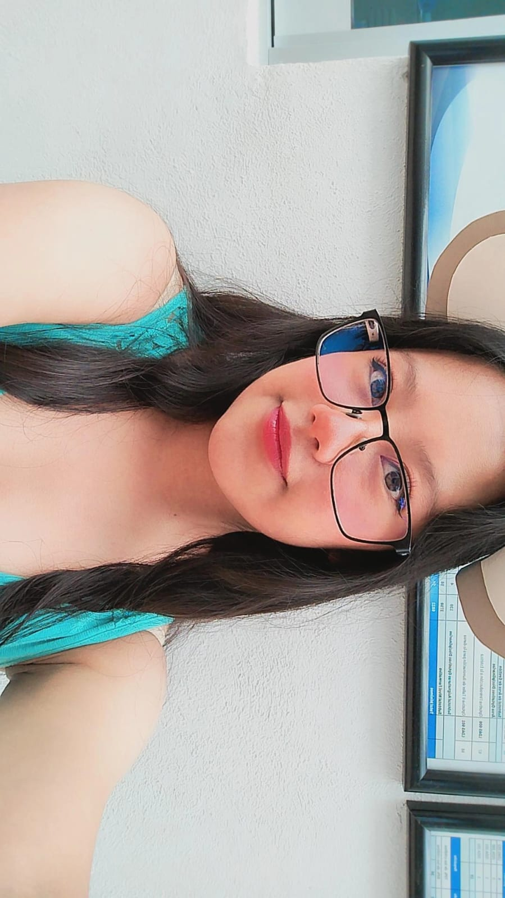

Tu presencia
No solo estás: acompañas, escuchas y haces que los momentos sencillos se conviertan en recuerdos importantes.
Una transmisión hecha solo para ti
Sube el volumen
Frecuencia privada · Para ti

AL AIREPara mi lobo, mi señal más constante
Entre tantas voces, caminos y coincidencias, encontré en ti una presencia que se volvió hogar. Hoy celebro al hombre que eres, la forma en que cuidas y todo lo que construyes con amor.
Lo que admiro de ti
Ser padre también vive en los gestos cotidianos: en la paciencia, en la presencia y en esa manera tuya de hacer sentir seguros a quienes amas.
No solo estás: acompañas, escuchas y haces que los momentos sencillos se conviertan en recuerdos importantes.
Con palabras, con paciencia y también con tu ejemplo, dejas aprendizajes que permanecen mucho después del momento.
En ti hay firmeza y ternura: una combinación que convierte tu cariño en refugio y tu compañía en confianza.
Hay algo muy tuyo en esa forma de proteger lo que amas. Como un lobo atento a su manada, sabes estar presente incluso en silencio.
El inicio de todo
No fue necesario buscar una gran explicación. En medio de voces, horarios y caminos distintos, algo empezó a sintonizarse entre nosotros.
Primero fue una coincidencia. Después, una conversación que queríamos continuar. Y sin darnos cuenta, aquella señal terminó convirtiéndose en una historia propia.
Dos maneras de comunicar
Parecían caminos distintos, pero ambos hablaban de lo mismo: tender puentes, acercar personas y hacer que un mensaje encuentre su destino.
Ella
Conectar puntos, abrir caminos
Su mundo consiste en lograr que la distancia no impida la comunicación y que cada nodo encuentre la ruta correcta.
Él
Convertir una voz en compañía
Su mundo usa palabras, historias y silencios para acompañar a personas que quizá nunca llegan a verse frente a frente.
“Ella aprendió a conectar equipos. Él aprendió a conectar personas. Y juntos crearon una conexión que pertenece solamente a los dos.”
Nuestra rutina más cercana
Hay llamadas que empiezan para contarse el día y terminan convirtiéndose en hogar. Una pantalla, dos voces y esa costumbre nuestra de estar cerca incluso cuando estamos lejos.
Ella en línea
La voz que vuelve cercana cualquier distanciaLobo en línea
La presencia que cuida incluso desde la pantallaNo siempre necesitamos estar en el mismo lugar para sentirnos juntos. A veces basta una llamada, un silencio compartido y esa certeza de que, al otro lado de la pantalla, seguimos eligiendo quedarnos.
Nuestra forma de escucharnos
No necesitamos tocar lo mismo para encontrar armonía. Cada instrumento aporta una parte distinta de lo que somos juntos.
Él
La fuerza que sostiene el ritmo y recuerda que toda historia necesita un corazón constante.
Él
La profundidad capaz de convertir emociones diferentes en una misma pieza.
Ella
La cercanía de una melodía que acompaña, abraza y vuelve memorables los instantes sencillos.
Frecuencia inesperada
Hay regalos que parecen pequeños hasta que conocemos la historia que llevan dentro.